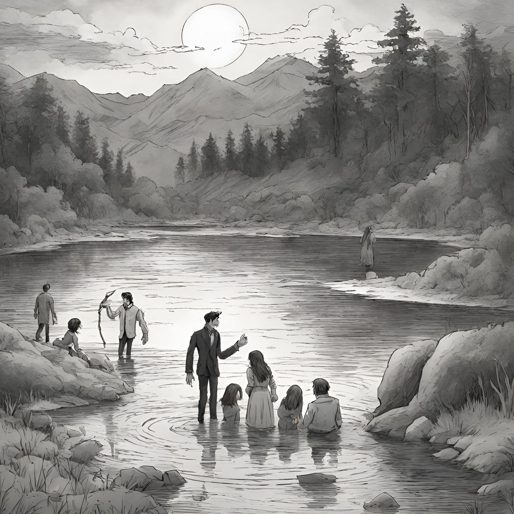

From Marriage to Death: Murder of Elizabeth Frankenstein
Recently, Elizabeth Frankenstein married Victor Frankenstein. This brought the family closer. After this, they took a honeymoon to a lake, with an inn. And on the same night of the wedding, Elizabeth Frankenstein is murdered in her room while Victor Frankenstein is away. She was strangled until she ran out of oxygen and died. The next day, Victor Frankenstein stated that, “A grin was on the face of the monster; he seemed to jeer, as with his fiendish finger he pointed towards the corpse of my wife ” (Shelley 200). Afterwards, Victor started a search party to look for the murder, with most not believing it was a monster. The party searched for the murderer, leading them to a lake where the murderer disappeared. They tried to fish out the murderer for hours, but in the end failed.